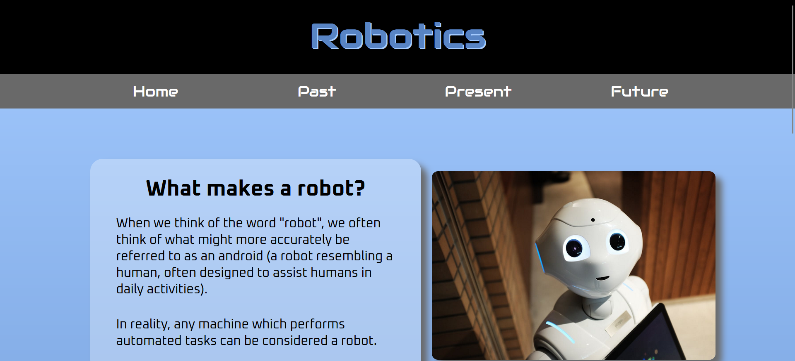

I have about five years of web design experience, most of which has been in my own time, for fun.
This semester I took my first formal course in web development. Here you can find some projects I created
this semester. Each section below links to a page with further details about the project.

This project was designed to increase our knowledge of mobile-first strategies and creating responsive
website designs. Our topic was future technologies, and I chose to create a website focuses on the future of
advanced robotics.

Our final project was designed to test all that we have learned this semester,
including CSS grids and Bootstrap. Our topic was our own to choose, but as we needed to show our
other sites and explain what we had learned from building them, I elected to update my portfolio to
showcase my work this semester. This is the site you're on now!

This project was designed to test our knowledge of html elements such as tables, forms, and embedded
media, as well as our ability to design them responsively. We were allowed to select any topic for this
project, so long as the requirements were met. I chose to design a website focused on providing information
about one of my favorite video games: Stardew Valley.